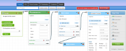
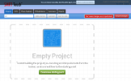
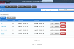
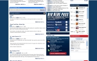

Portfolio
Gastón Ramos - Just another person.
The following are some projects which I was involved, most of them were built using ruby and web techmologies.
SmartTouch
I started working on SmrtTouch from the begining of the project, SmrtTouch is a tool that allow users drawing routing calls with a friendly UI and diagrams, is made using technologies like Rails 3, Backbone.js, Jquery and Html 5.
  Simulscribe
PhoneTag automatically converts your voicemail into text and delivers it directly to your mobile phone and/or your email account; so you can read your voicemail. I worked doing the transcription's workflow process using technologies like Rails 2, Mongo Db, Amazon EC2 and Delayed Job.
Assembla.com
Assembla.com I worked in assembla improving the whole site and adding some new features, i did the multiple server deploy, added sftp protocol support and git repo support for the ftp tool.
Rmbrme.com
RmbrMe.com Is a web application for sharing contact information from your mobile phone, i worked as a contractor in order to add some new functionality and improve the existing code. I built the integration with Twitter, the new subscription system. I did the migration to rails 2.3 and cucumber. We launched beamME Pro 3.0.
IfansBlog & App Installer for Passenger
I have modified Big Blue Pass Fan Blog to be a new generic fan blog system, now it's possible to install ifansblog and setup any Sport Team.
I have developed a ruby script to install and deploy a new Ifansblog site, on Apache server using Passenger (Mod_Rails) and Ruby Enterprise Edition with a simple user interface, to install.
- Technology: Ruby on Rails 2.1.1 - Passenger - Ruby EE - Apache.
Big Blue Pass Fan Blog
Big Blue Pass (http://www.bigbluepass.com/) Is a Giant's Fan blog, users can post articles about the team and comments them, they can track Giant's NFL games and read news from a feed list. Users can publish your personal profile if they wish. There is a backend to manage users accounts and page content.
- Technology: Ruby on Rails 2.1.1 - BDD (Rspec).
- Used Plugins: restful_authentication, acts_as_state_machine, attachment_fu, easy-fckeditor, meteor_strike, permalink_fu, rspec, rspec-rails, timed_fragment_cache, will_paginate.
ChunkyCode
Chunky Code (http://code.mogok.com.ar) Is a social blogging system thats allows to users posting chunks of code, is made focusing on source code and makes easy the edition through Markdown technology. See Documentation (In Sapnish)- Technology: Ruby on Rails 2.0.2 - REST - BDD (Rspec).
- Used Plugins: acts_as_ferret, acts_as_state_machine, restful_authentication, acts_as_taggable_on_steroids, geokit, ym4r_gm, gravatar, rspec, rspec_on_rails, will_paginate, railroad
- Google Maps Api.
Rdental
Rdental is a web application for odontograms management. It allows to handle patients electronic health records (EHR) and add odontograms pictures to it on demand. download screencast demo- Technology: Ruby on Rails - RMagic - ImageTooth - Rspec .
- Odontograms history.
- A simple interface for edit an update odontograms.
- Upload patiens pictures.
ImageTooth ruby library
ImageTooth ImageTooth is a library that provides programmers and users a simple way to generate images for odontograms. IT allows to choose between png or jpg images..
- Technology: Ruby - RMagic - Rspec - RubyGem.
- Tooth image generation.
- Simple script that allows you to create the teeth images directly.
- A simple interface for painting teeth faces.
- All permutations generating.
Terra sms alert backend
Terra sms alert backend is an SMS alert system, where they users have suscript via SMS and they receive alerts on their mobiles.
- Technology: PHP - SimpleTest - Oracle.
- Instants messages.
- Daily messages.
Bippie CMS backoffice
Bippie CMS backoffice is a web-based Content management system for mobile contents.
- Technology: Php - Perl - Mysql.
- Wallpapers - Polyphonic ringtones - Monophonic ringtones - Video - Mp3.
- Content download ranking.
- Partners management interface.
- Backend interface.